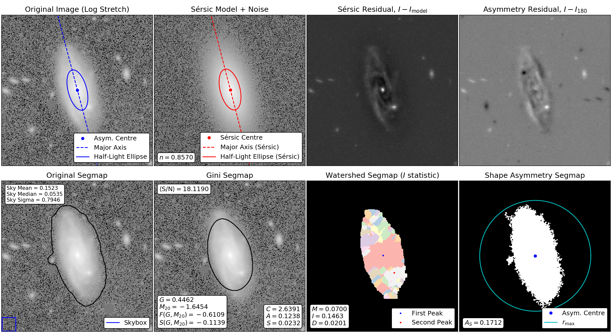

Galaxy morphology with statmorph
Along with Jennifer Lotz and Gregory Snyder, I developed statmorph, an affiliated package of Astropy for calculating non-parametric morphological diagnostics of galaxy images, such as the Gini–M20 (Lotz et al. 2004) and concentration–asymmetry–smoothness (Conselice 2003) statistics, as well as fitting 2D Sérsic profiles. The official site can be found on ReadTheDocs.The figure below shows some of the properties measured by statmorph for a white-light image of a randomly selected Pan-STARRS galaxy.
